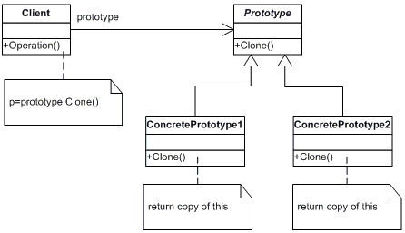
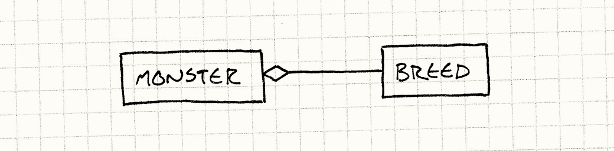

0x00
新坑《游戏编程模式》（作者 Robert Nystrom）。
在 Unity 下，用 C# 做了简单的实现，传送门：
链接：https://pan.baidu.com/s/1ovnk9v1PjaE7qfAj1Mm8vg
提取码：vvw6
这里并没有特别去区分涉及到的这两个模式。
其他模式传送门：
今天是两个我觉得比较抽象的模式，原型模式和类型对象模式。
在 github 看到大佬的代码库，这里码住，也给大家 https://github.com/QianMo/Unity-Design-Pattern 学习，大致看了一下，这里的示例与书中介绍的案例更类似。
0x01 原型模式
“使用特定原型实例来创建特定种类的对象，并且通过拷贝原型来创建新的对象。”

原型模式属于创建型模式的一种，通过复制一个已经存在的实例（原型）来获得新的实例，而非新建实例。当创建一个复杂对象实例更加耗时，通过复制原型将使程序更加高效。
前段时间听到“原型”这个词还是在看 Lua 的时候，Lua 语言使用内置数据结构表来实现面向对象的方法，就是参考了基于原型的语言（prototype-based language），比如 Self 语言，JavaScript 语言等。这种组织方式是当一个对象（类的实例）在遇到一个未知操作时，都会在这个对象的原型中查找。
“类”和“原型”都是组织多个对象之间共享行为的方式。在基于原型的语言中，对象并不是类的实例，而是每个对象都包含一个原型（prototype），而且，每个对象也都可以作为其他对象的原型存在。在 Self 中，通过 clone() 方法来的得到一个完全相同的新对象，并可以在新对象上添加附加的属性和方法（在“原型”中属性和方法（代表行为）更相似，而“类”中属性是属于对象的，而方法是属于类的）。但是这种使用 clone() 方法的组织方式用起来并不顺手，因此呢同样是基于原型的语言，Javascript 在语法方面使用了基于类的方式，所以用起来会更顺手。
原型模式在数据方面也有相应的应用，在创建如 json 数据文件时，对相同的数组字段，完全可以使用原型来处理，将所有重复的部分作为一个单一原型来重用。
0x02 类型对象模式
“通过创建一个类来支持新类型的灵活创建，其每一个实例都代表一个不同的对象类型。”

类型对象使用两个类，就可以表示无限的种类。它通过“引用一个表示类型的对象”来代替“类继承关系”。这种将类型的定义从语言层面转移到保存在内存中的对象中，更为灵活但弱化了行为。
也就是这种模式在定义数据时更灵活方便了，但相应的要定义行为就变得困难了。简单的解决办法是使用预定义集合，通过类型对象中的数据选择预定义行为。更彻底的解决办法就是通过可以编译代表行为的对象的模式。
使用情景
当需要定义一系列不同“种类”的东西，但又不想把那些种类硬编码到类型系统中时，尤其在：
不知道将来会有什么类型。
需要在不重新编译或修改代码的情况下，修改或添加新的类型。